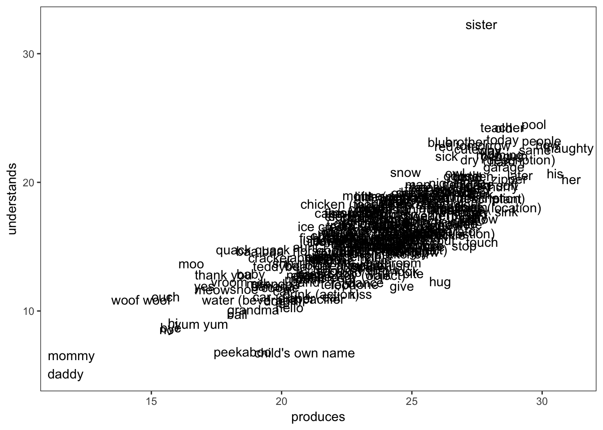
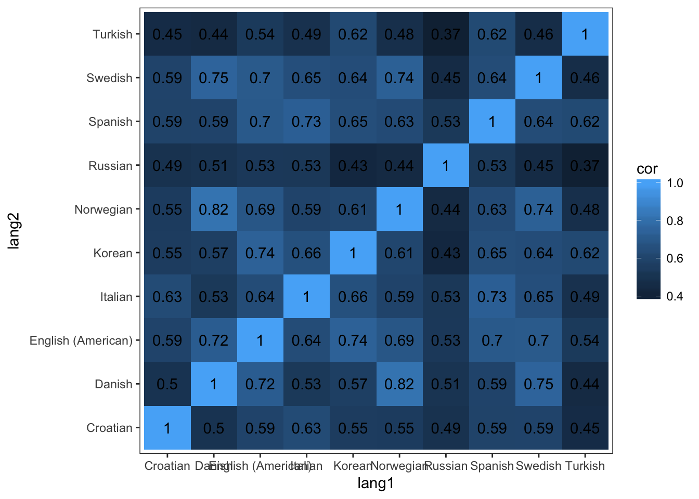
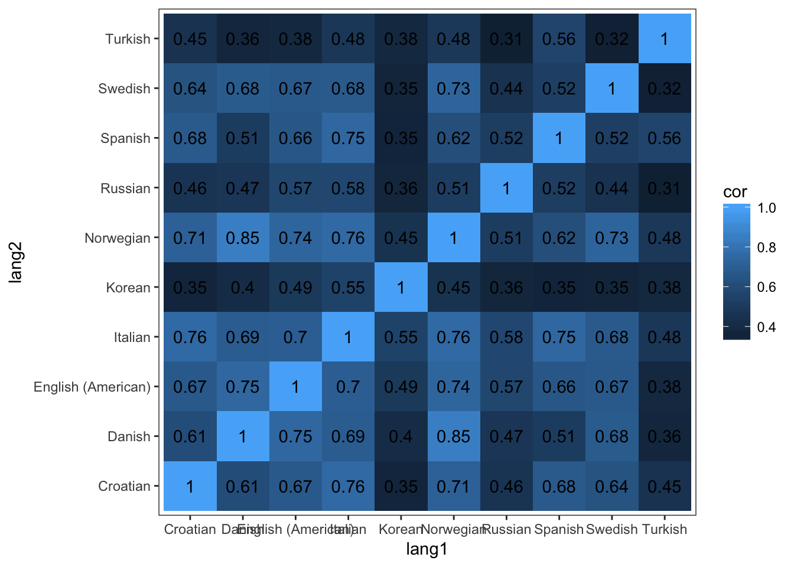
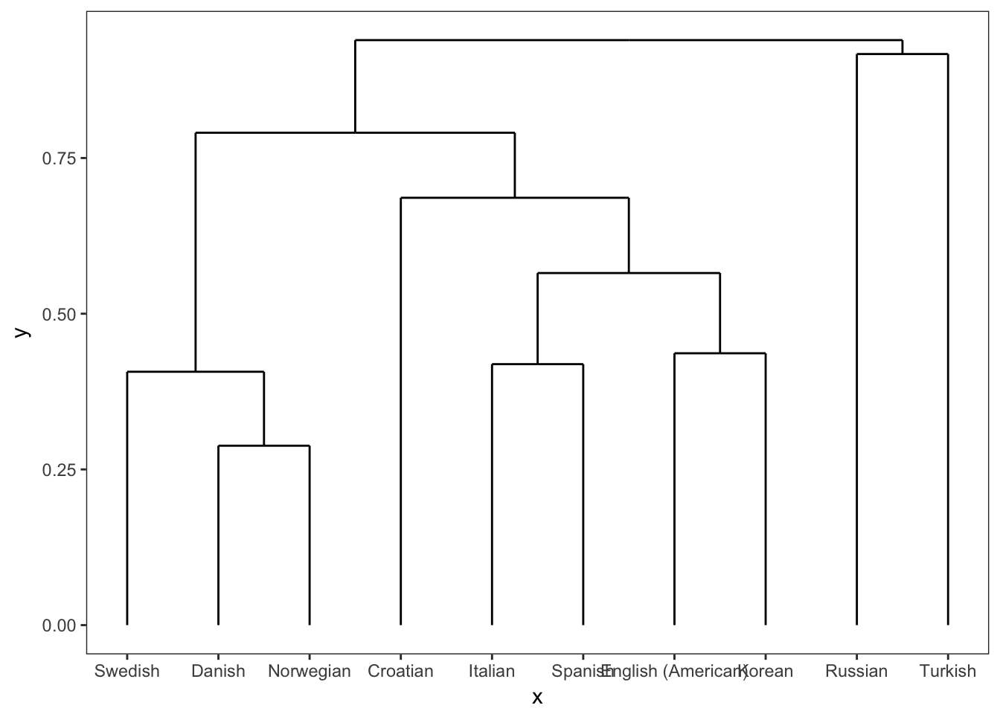
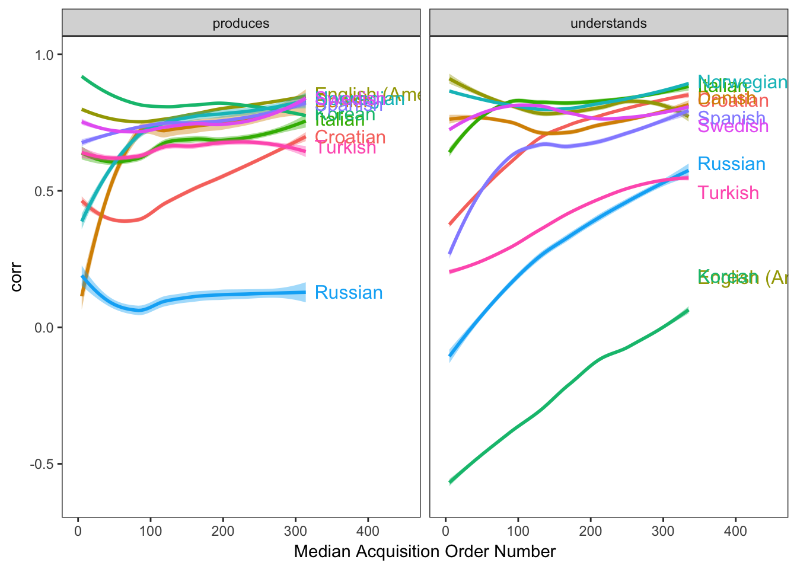

7 Individual Words: Consistencies
Which words do children learn first? In spite of tremendous individual variation in rate of development (1), the first words that children utter are strikingly consistent (Tardif et al. 2008): they tend to talk about important people in their life (“mom”, “dad”), social routines (“hi”, “uh oh”), animals (“dog”, “duck”), and foods (“milk”, “banana”). As children learn from their experiences and according to their own interests (Mayor and Plunkett 2014) their vocabulary grows rapidly, typically adding more nouns, but also verbs (“go”) and other predicates (“hot”) to their production repertoires. In the latter part of this chapter, we ask why some words are learned before others. But first, we ask the prior question: How similar are the acquisition trajectories of children learning different languages? Similar trajectories–no matter their proximal causes–suggest that these causes are consistent across languages.
Because the CDIs are adaptations and not translations, the individual item inventories vary significantly across languages. Nonetheless, when translation equivalents exist on multiple forms we can look at the variability in how quickly they are acquired across languages.
Some words about AOA estimation–OR MAYBE NOT?
Looking at unilemma completeness
Production
Comprehension
To begin, we ask about the earliest words. Following (???), we present the first 10 words acquired by children across langauges
Top 10 words across languages
Comprehension
Production
Acquisition order in production vs comprehension across languages

Consistency across languages
Production consistency 
Comprehension consistency 
Production dendrogram 
Understanding dendrogram

Consistency across acquisition order 
Demographic effects. In this part, we focus on demographic differences in the learning of individual words. Braginsky et al. (2016b) reported on gender differences in the particular words in early vocabulary; we generalize this analysis to birth order and socio-economic status